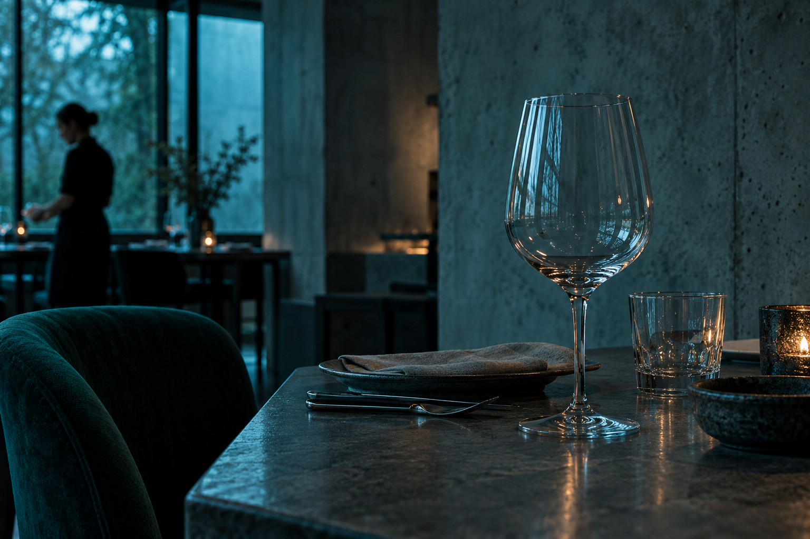

Halden Type Foundry
IdentityA visual identity built around a quieter rhythm.
IDENTITY / WEB / MOTION
I design brand systems and build the
interfaces that ship them, from the first
grid to the last frame of motion.
A visual identity built around a quieter rhythm.
Light, shadow, and a little room to look.
Visual identity for a considered collection of objects.
A slower start, in a small independent web study.

A SMALL PRACTICE
I work at the intersection of identity and interface. A clear system gives the details somewhere to belong.
This independently coded study connects the cover, selected projects, a little context and a local conversation.
HAVE SOMETHING IN MIND?